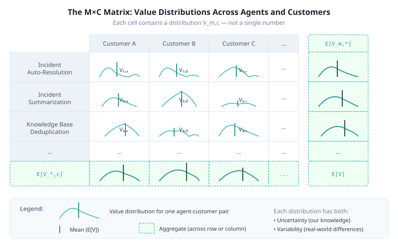

Part 2b of Iterating in the Dark:
Organizational Blindness in AI Evaluations
When you see a range, what does it mean?
← Part 2: The Cost of Ignorance | Series Index
Orientation. This section introduces a distinction used throughout the rest of the series: variability describes real differences in the world, while uncertainty describes limits in our measurement of a metric. Confusing the two leads to systematic evaluation errors.
You have M agents (Incident Auto-Resolution, Incident Summarization, Knowledge Base Deduplication, Document Classification, ...) and you are considering deploying them across C customers (Customer A, Customer B, Customer C, ...) - or C domains, or C regions - whatever. Each cell in this matrix has a value distribution: Vm,c - in other words, each of these cell is a random variable.

The aggregates matter too: You can also consider what happens at the row and column level, that is, the value of one agent (across customers) of the value for a customer that implements some - or all - of the agents. Those are random variables, too. And you can think about statistics such as:
Each cell is unknown. We have beliefs about it, with varying degrees of uncertainty. It is very common to be uncertain about these distributions.
What is important is 1. to be aware of what we are talking about when we are discussing a metric (which cell in this figure?) and 2. be aware that we are talking about estimation of random variables (sorry to keep insisting on this....)
When you see distributions or "bars" around a value, you need to be sure you understand what they represent. And you want to make sure the presenter knows what they represent.
If somebody says "We expect our incident resolution agent to have a value/cost savings of $12 per run, plus or minus $4," you MUST ask what they mean.
| What they might mean | Interpretation | Can we reduce it? |
|---|---|---|
| Uncertainty | "We believe the average is somewhere between $8 and $16, but we're not sure which" | YES — better measurement narrows the range |
| Variability | "We're confident the average is $12, but some customers will be around $8, some other customers will see $16" | NO — this is real-world difference, not measurement error |
This distinction is fundamental:
Uncertainty is about our knowledge. It reflects the fact that we haven't measured enough, or our measurements are noisy, or our judges are inconsistent. Uncertainty can be reduced by:
Variability is about different target customers or domains. It reflects the fact that different deployments of the same agent will have different data quality, different languages, different processes. Variability across customers (the fact that E[Vm,c1] ≠ E[Vm,c2]) cannot be reduced via better measurement. It can only be addressed via:
This uncertainty is different
With measurement uncertainty, better evaluation narrows your range. You become more confident about the true E[V].
With cross-customer variability:
If you evaluate on Customer C's data, you don't make the agent work better for Customer C. You just learn that it doesn't work well there.
What can you do to address variability?
The key point: this is not a measurement problem. It's a real-world variability problem. Recognizing the difference matters for deciding where to invest effort. So we will not be focusing on this variability.
HOWEVER - remember that if you make changes and improve the agent for a customer, this does not mean other customers will see improvements - you may actually make things worse overall. It's obvious, but my experience is that this is part of the many obvious things that need to be said.
Next: Part 3: Better "Evals" Beats Better Dev — The value of knowing what you're measuring